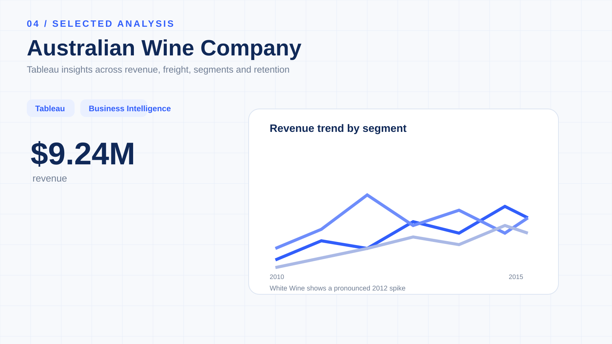

Australian Wine Company
Insights.
An interactive Tableau Business Intelligence dashboard designed to bring sales, product, customer and KPI performance into a single management-oriented analytical view.

Turn business data into an interactive management view.
The objective was to create a Tableau-based BI solution that helps stakeholders understand sales performance, revenue trends, product contribution, customer performance and key business indicators.
A dashboard built around measurable performance.
The dashboard consolidates business performance indicators into an interactive reporting experience. The portfolio snapshot below highlights the available project metrics.
Four analytical lenses.
The dashboard combines multiple business perspectives so users can move between headline KPIs and detailed performance patterns.
Sales Performance
Monitor overall sales performance, revenue trends, period-wise movement and contribution patterns.
Product Analysis
Compare product contribution, product performance differences and product-level trends.
Customer Analysis
Explore customer-level performance, contribution and high-value customer groups.
KPI Monitoring
Bring important business indicators together for faster performance monitoring.
Trend Identification
Use interactive visualizations to identify changes and patterns requiring further investigation.
Interactive Exploration
Filters, charts and dynamic views allow users to explore the underlying business questions rather than rely on a static report.
Revenue, targets and operating indicators.
The project provides a management-oriented view of performance. Revenue is shown against a target, while freight, order quantity and average unit price provide additional operating context.
The dashboard indicates approximately 94.8% achievement against the stated revenue target, leaving a gap of roughly $0.51M.
Compare contribution across markets and product groups.
The dashboard supports regional and product-level exploration rather than treating total revenue as the only performance measure.
Performance is not only about the latest sales number.
The dashboard also explores customer contribution, retention patterns and category trends to add context to the headline KPIs.
Customer retention
Order quantity rises across the displayed cohort years from approximately 25K in 2010 to 42K in 2013.
Red wine
The project analysis describes Red as relatively consistent across the displayed trend period.
White wine
The analysis identifies a notable spike around 2012 in the White category.
Rose / Sparkling
The category is described as more volatile across the displayed trend period.
Customer contribution
Customer-level views help identify contribution differences and support further high-value customer analysis.
Freight
Cumulative freight contribution is visualized as part of the dashboard's business performance story.
Business question → visualization → insight.
The project focuses on connecting business requirements with analytical outputs instead of creating charts in isolation.
Tableau as a business intelligence layer.
The primary analytical deliverable is the interactive Tableau dashboard published through Tableau Public, with GitHub providing the project documentation and portfolio context.
Keep the dashboard in context.
Dataset scope
The dashboard represents the data available in the project dataset and should be interpreted within that scope.
Patterns ≠ causation
Dashboard-level relationships and trends do not automatically establish causal explanations.
Customer data
Customer analysis reflects the available customer-level data and is not automatically a complete customer lifetime value calculation.
Decision validation
Business recommendations should be validated using current operational and financial data before implementation.